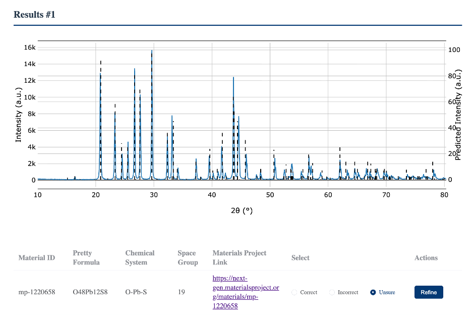

一条 XRD 数据，不该止步于“看过了”
实验结束后，仪器通常只交给我们一个 .xy、.xrdml 或 .csv 文件。真正困难的部分刚刚开始：它对应什么相？结果可信吗？结构是否发生细微变化？几个月后，我们还能找到原始数据、判断依据和可下载的结构文件吗？
开始之前：XRD 究竟在告诉我们什么？
X 射线衍射（X-ray Diffraction, XRD）记录的是晶体中不同原子面散射 X 射线后产生的干涉图样。峰的位置主要与晶面间距有关，峰的相对强度则还会受到原子种类、占位、择优取向和实验条件影响。
nλ = 2d sin θ Bragg 定律：λ 为 X 射线波长，d 为晶面间距，θ 为衍射角。
因此，数据库中的理论衍射峰与实验曲线对得上，是“该结构可能存在”的有力证据，但不是终点。峰位整体偏移可能来自晶格变化或仪器零点；峰展宽常与晶粒尺寸、微应变有关；额外峰则可能提示杂相。每一步都要把这些可能性留在判断里。
用 XQueryer：从原始数据到结构候选
当你希望快速知道谱图“像什么”，可以将原始 XRD 文件上传至 XQueryer 的 Query 模块。它覆盖 XRD 模拟、物相识别、简单精修与多相分解；这里先使用最直接的物相查询流程。

1
注册并进入 Query
从 Query 进入相识别页面。该功能需要先在右上角注册或登录。
2
上传单个谱图
点击 Select Single File 导入数据。若已知样品包含哪些元素，选择元素范围能缩小候选空间，通常会提高识别的针对性。
3
检查结果，而非只看第一名
上传过程会进行格式转换、基础检查与备份，再进入模型识别。结果页面会给出候选结构及其详细地址；建议把它视为下一步验证的起点。

完成上传后，先确认扫描范围、峰形和背景是否与原始测量一致。只有输入数据本身可信，后续的候选排序才有意义。

识别完成后，XQueryer 会将候选结构及相关结果直接可视化展示。可从结果页进入结构详情，查看晶体信息并获取 CIF，作为后续峰位验证与精修的输入。

用 XMatcher：把“候选”变成可检查的结论
当 XQueryer 给出候选后，我通常会再用 XMatcher 做识别与验证。它支持中文、英文、日文和韩文，且将单相识别、多相识别、PDF 全峰对比分开呈现，适合初学者逐项确认。
2.1 打开软件，选择正确的任务
下载并打开软件后，先从左侧的“数据导入”开始。页面中的三个模块分别对应不同问题：样品预计只有一种主要晶相时先选单相自动识别；若已知存在杂相或混合物，再使用 AutoMix 自动多相识别；拿到候选 CIF 后，用 PDF 全峰对比检查整条谱图。

2.2 导入实验 XRD 数据
点击左侧“上传 XRD”。软件支持 CSV、TXT、XY、DAT、简单 JSON，以及常见 XRDML/XML；也可以直接粘贴两列 x, y 数据。默认会把前两列读作 2theta 和强度，因此导入前最好确认列顺序和单位。

完成导入后，展开相应模块即可开始分析。对于本例，我们首先使用单相自动识别获得候选结构，再将候选 CIF 带入 PDF 全峰对比；多相样品则应转入 AutoMix 模块。

2.3 先设置寻峰：决定“哪些实验峰值得用于判断”
寻峰不是把曲线上所有微小起伏都当作衍射峰。最低峰高、显著性、最小峰距和背景窗口共同决定哪些峰被保留；其中“峰数量”表示参与初步匹配的最强实验峰数量。一般而言，清晰峰越多，判断依据越充分；但当样品本身峰少、峰宽或信噪比较低时，阈值设得过高反而会得不到候选。

2.4 再设置匹配：决定“多少证据才算通过”
“最少匹配峰”是很实用的过滤条件：候选结构的匹配峰数少于该值会被排除。峰位容差和最大平移用于处理仪器零点或样品整体峰位偏移；一般先使用适中的默认值，再依据标准样品与仪器条件调整。要求越严，结果通常更可靠，但也更可能漏掉峰弱或重叠的真实相。

2.5 自动识别并查看候选列表
导入并设置完成后，点击自动识别。结果页会同时显示实验谱线、检测峰和经平移校正后的理论峰；下方列表给出候选化学式、匹配峰数、误差和空间群等信息。不要只看第一名：如果前几名分数接近，应结合样品的元素组成和制备条件继续排除。


2.6 用 PDF 全峰对比做最后确认
在 PDF 模块中选择同一条实验 XRD 和候选 CIF，点击计算。这里不只看几个强峰：应检查主要峰位是否对齐、相对强度是否大致合理，以及是否仍有未被候选结构解释的强峰。图中实验谱与理论峰整体吻合时，才有理由把该结构作为可信的主相解释。

从“匹配到相”到“理解样品”：结构精修
真实样品不会是数据库结构的完美复刻。缺陷、残余应力、位错、晶格常数变化、原子占位变化，以及择优取向等，都可能改变衍射图样。物相识别回答“它可能是什么”；精修则试图进一步回答“它与理想结构差在哪里”。
精修前的准备
- 保留原始谱图和仪器条件：辐射源、扫描范围、步长、狭缝及样品制备信息；
- 选取经 PDF 对比验证过的 CIF，而不是只用排名最高的候选；
- 先处理背景、零点与峰形，再逐步引入晶格、尺寸/应变、占位等参数；
- 警惕“拟合很好但没有物理意义”：参数必须有合理的边界和解释。
用 Xchange：让结果、依据和原始数据一起被保存
完成结构识别后，最容易被忽略的一步是数据管理：谱图、CIF、样品信息和论文链接往往散落在不同文件夹。Xchange 提供中英文 XRD 数据归档入口，让这一套证据可以被查找、管理和引用。
4.1 先浏览数据库，理解什么是一条完整记录
首页可以浏览平台中的公开数据。一条记录不只包含一张图，而是将实验 XRD、晶体结构、物相信息和审核状态组织在一起。

4.2 注册并登录自己的账户
新用户点击注册，填写账号名、邮箱、工作单位和密码。注册信息的作用是声明数据贡献者；登录后，提交的数据会自动进入个人中心。未登录时也可浏览平台数据，但无法将记录绑定到自己的账户，也不支持下载完整数据。


4.3 在个人中心管理历史数据与 VIP 权限
登录后会出现个人中心，集中显示你名下数据的审核状态和历史记录。VIP 下载权限会随贡献自动开启：当同一账号上传、并通过审核的数据累计达到 10 条及以上 时，系统会自动授予 VIP 权限。即使暂不下载数据库，个人中心本身也能避免“做完分析后找不到是哪次实验”的问题。

4.4 贡献数据：XRD、CIF 与元数据缺一不可
点击“贡献数据”后，按顺序上传实验 XRD 和刚刚识别得到的 CIF；单相模式上传一个 CIF，多相模式可以上传多个 CIF。随后填写样品名称、化学式、物相名称、X 射线靶材/波长、测试日期、贡献者和实验备注等信息。这些元数据决定了别人能否理解和复现实验条件，不要只填一个化学式就提交。

4.5 审核后，形成可分享、可追溯的实验条目
数据入库后，记录页会同时显示 XRD 曲线、CIF、结构可视化、质检状态和推荐引用信息。若数据对应已发表论文，还可以补充文章链接或 DOI，使原始测量、结构解释与研究成果彼此关联。

一份可直接照着做的 XRD 清单
测量后立刻保存
保留原始文件、仪器条件和样品编号；不要只保存处理后的图片或导出的峰表。
先初筛，再验证
用 XQueryer 得到候选，用 XMatcher 检查实验峰与理论峰的对应关系，并记录设置的参数。
把结论变成证据链
需要时开展精修；将 XRD、CIF、元数据和关联论文一起归档，方便自己和他人复用。